The touring show of the color and nature sections of the 6th China Zhejiang (Qiandao Lake) International Photography Festival has officially opened at the Wu Zongqi Photography Art Museum in Qiandao Lake Alpha City. On the afternoon of June 4, a large group of photographers and enthusiasts visited in a tour. Wu Zongqi, the museum's director, introduced the festival and told the stories behind the photos. Wu Zongqi said he wants to build a photography art space at the doorstep for the people of his hometown, so they can see world-class photography up close.
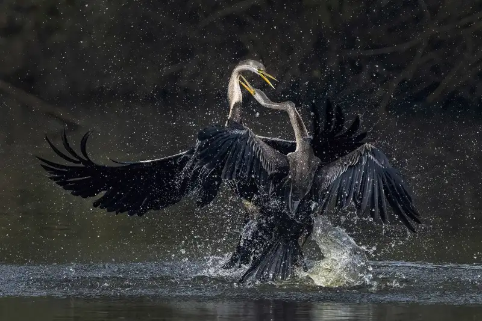
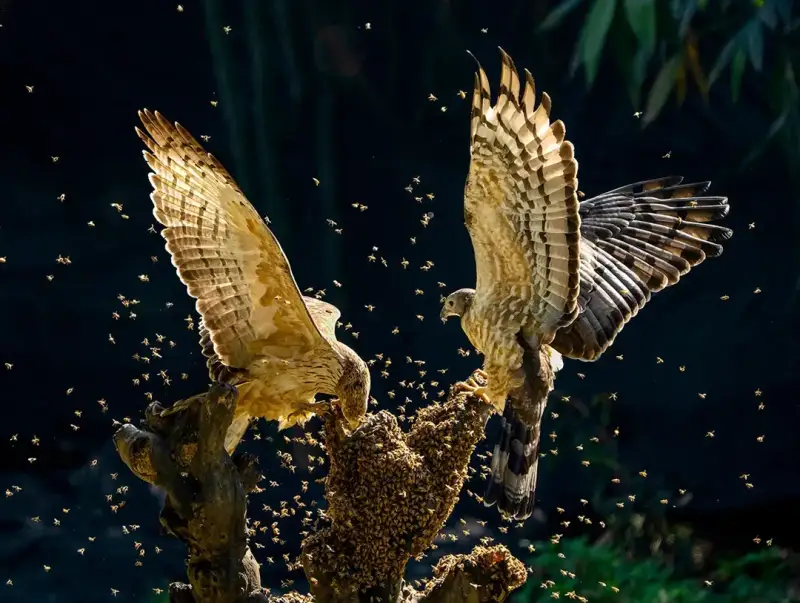
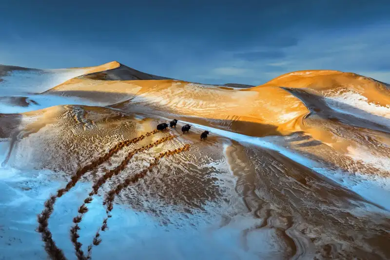
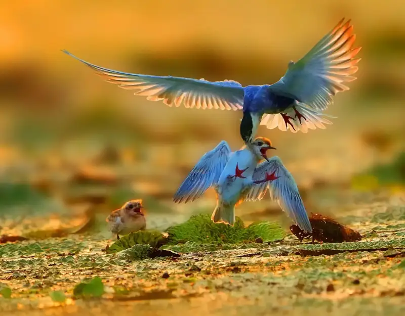
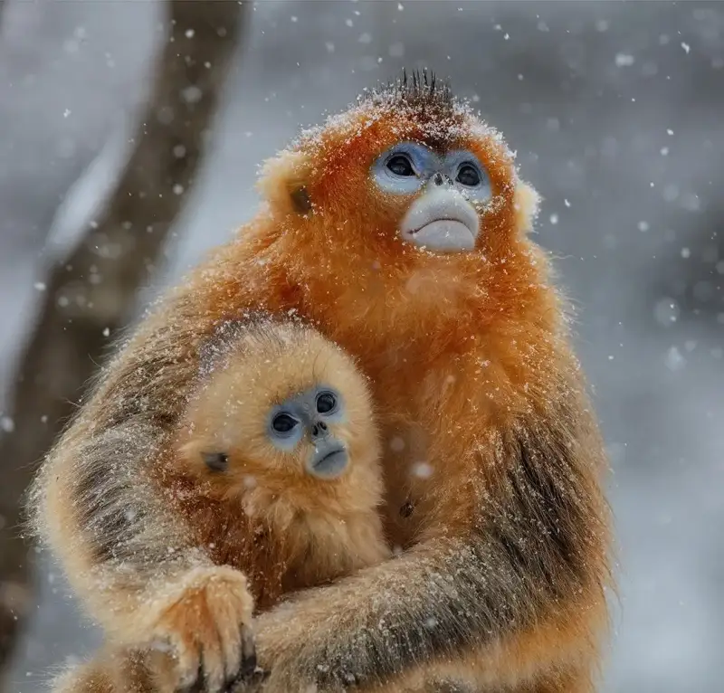
The 6th China Zhejiang (Qiandao Lake) International Photography Festival is co-hosted by the Hangzhou Culture, Radio, Television and Tourism Bureau, the Huangshan Federation of Literary and Art Circles, and the Propaganda Department of the Chun'an County Party Committee. It is certified by three leading international bodies: the International Photographic Art Federation (FIAP), the Photographic Society of America (PSA), and the Global Photographic Union (GPU). This year the festival uses the core image of "Lake and Mountain as a Mirror" and invited works from around the world. It received 6,074 entries from 675 photographers in 52 countries and regions and 27 provinces, cities, and regions of China. The organizers invited 10 international photography experts from Britain, Germany, France, and China to judge. After a fair and open selection, 132 awards were given. The award-winning show opened with a ceremony at the Zhejiang Exhibition Hall on November 9, 2025. It has since toured Hangzhou, Gongshu, and other places, and won broad praise from visitors.
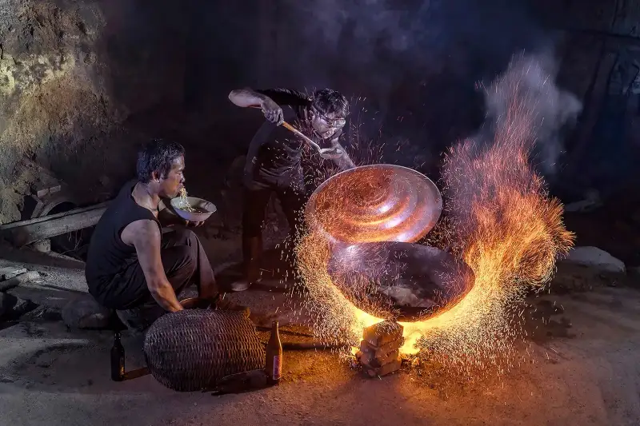
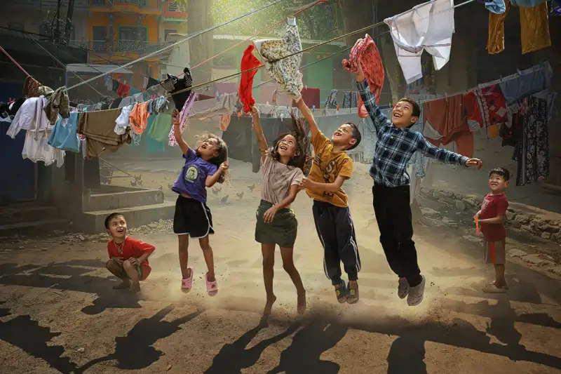
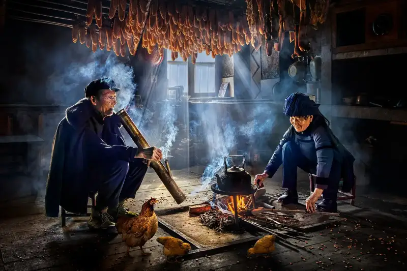
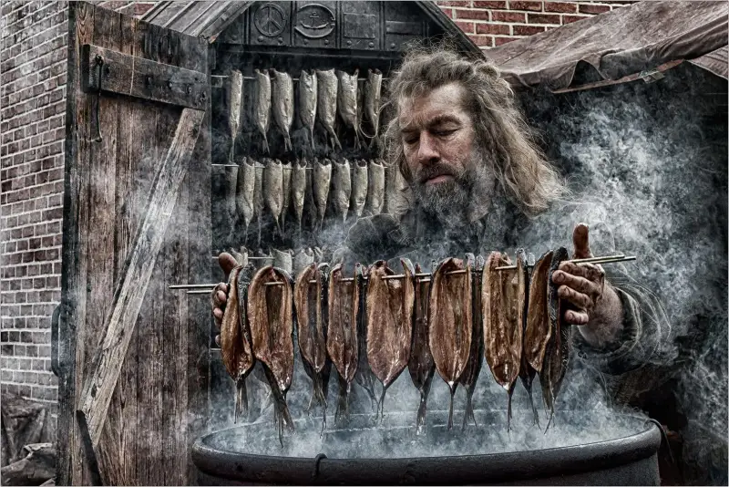
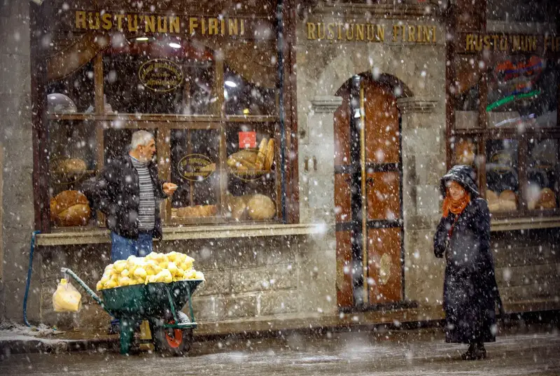
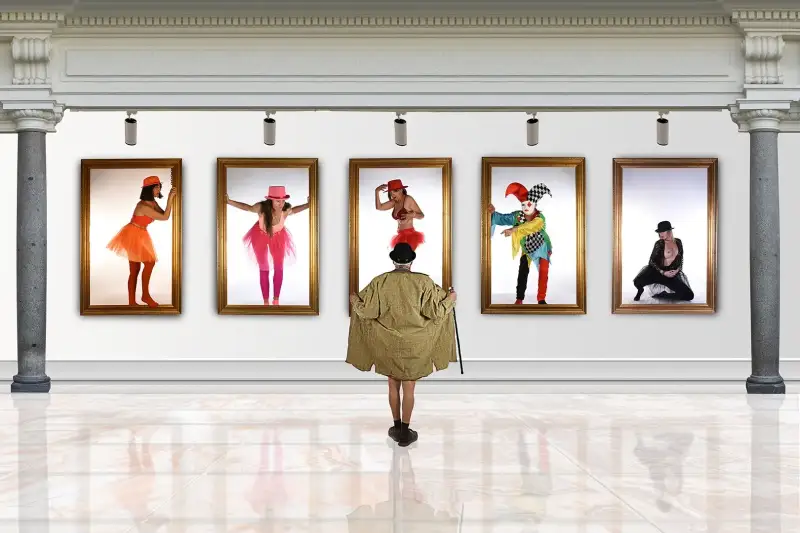
Wu Zongqi, then chairman of the Zhejiang Photographers Association, brought in and founded the China Zhejiang International Photography Festival in 2015. It runs every two years. The 1st China Zhejiang (Qiandao Lake) International Photography Festival ran from 2015 to 2016. The 2nd was at Xianghu from 2017 to 2018. The 3rd was at West Lake from 2019 to 2020. The 4th took on Song-dynasty culture from 2021 to 2022. The 5th covered the Grand Canal and the Three Rivers banks from 2023 to 2024. With this edition, six festivals have been held, and two of them center on Qiandao Lake. That shows how much Wu Zongqi loves and cares for his hometown.
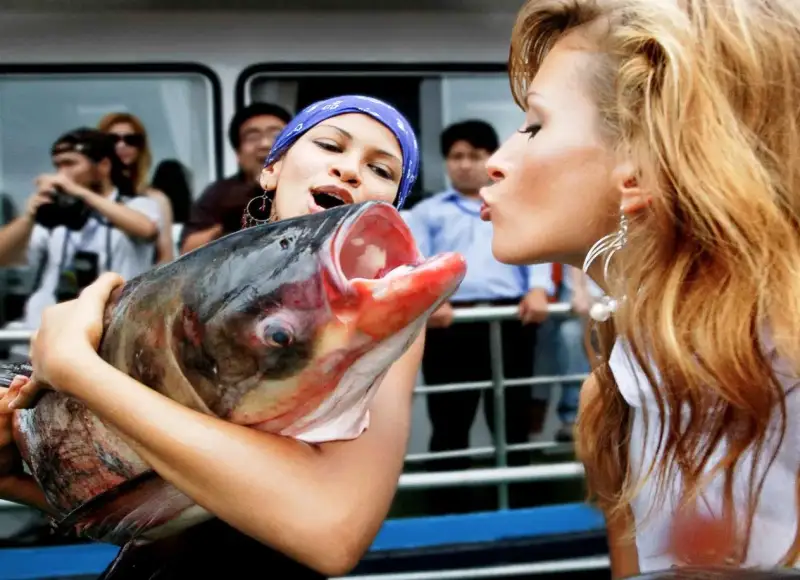
Wu Zongqi, "Kiss"
International exchange in photography matters. Wu Zongqi spoke with pride of his work "Kiss" winning the PSA Gold Medal at the 2010 PSA International Photography Exhibition. Before then, he said, most Chinese photographers saw international contests as out of reach. The first time he entered, on a try-it-out mood, he sent 8 photos on his hometown Qiandao Lake. To his surprise, 6 of them won. One took a gold medal, two took ribbon awards, and three took honorable mentions. He was invited to the United States for the 72nd PSA annual meeting and awards ceremony. At the ceremony, he screened a special show of 30 Qiandao Lake landscape and culture works to warm applause. Wu Zongqi says his camera has always pointed at Qiandao Lake, and he has shot Chun'an all his life. The Chun'an subject matter is rich and unique, and it can produce world-class work. Good subjects are right beside us. We must have that confidence.
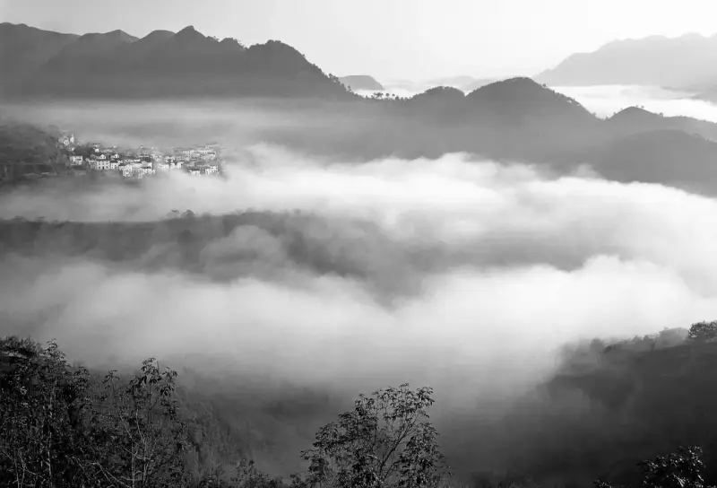
Wu Zongqi, "A Peach Blossom Spring"
In 1983, "A Peach Blossom Spring," shot by Wu Zongqi, won second prize in the national rural photography contest hosted by the Chinese Photographers Association. It was Wu Zongqi's first national award, and it counts as his debut work. The award gave him great encouragement. When he speaks of the shoot 40 years ago, and the way he danced for joy when it was done, his face still lights up.
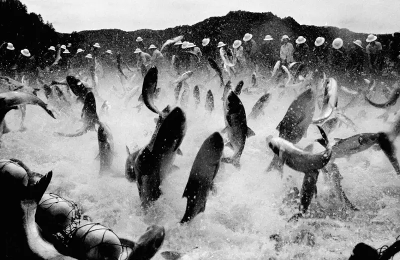
Wu Zongqi, "Wild Dance"
"Wild Dance," shot in 1986, is the best known of all Wu Zongqi's works. That year it won the gold medal at the 14th National Photography Art Exhibition, the first gold medal for Zhejiang at the national show. Because "Wild Dance" won, the giant-net fishing at Qiandao Lake gained fame as never before. Many of Wu Zongqi's giant-net fishing photos hang as signboard art in restaurants and fish shops. This shows that photography is not only art. It records life, and it also shapes life. At times it is a real force for economic and social development.
In 2004, when the United Nations Environment Programme and the International Federation of Park and Recreation Administration co-hosted the 8th Global Awards for Livable Communities in Niagara, Canada, Qiandao Lake took the only gold award in category B. It became the first county-level city in China to win the honor. Wu Zongqi spent half a year shooting back and forth in the Qiandao Lake town area. From nearly ten thousand photos he selected 160 that fit the five contest themes, such as city building, scientific management, and heritage protection. This gold was not a photography award, but Wu Zongqi treasures it even more and takes even more pride in it.
Wu Zongqi was born into a photography family. His grandfather and father ran the Ruzhen Photo Studio in the Lion City old town, the underwater city of Qiandao Lake. He apprenticed with his father in 1978, and in 1980 he was assigned to the county cultural center to work as a professional photographer. That was 48 years ago. Wu Zongqi says the landscape of Chun'an is the blessed land of his work, and the people of Chun'an are its source. The only way he can give back is through the work he has made in these 48 years. He shows it all at the Wu Zongqi Art Museum in Qiandao Lake Alpha City. He hopes to build a photography art space at the doorstep for the people of his hometown, who are always welcome to visit and share, free of charge.